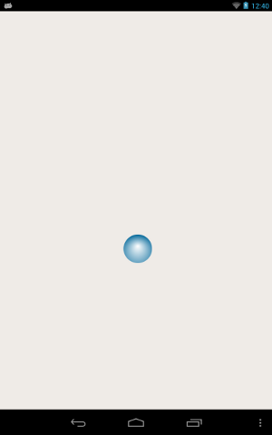

Qt Sensors - Accel Bubble
The AccelBubble example demonstrates the Accelerometer QML type.

Overview
Writing a QML application that uses the Accelerometer QML sensors type requires the following steps:
Import the Sensors Declarative module.
import QtSensors 5.0
Add an Accelerometer QML type.
Accelerometer {
id: accel
dataRate: 100
Use the 'active' property to start the sensor
active:true
Move the bubble according to a factor of the accelerator sensor
onReadingChanged: {
var newX = (bubble.x + calcRoll(accel.reading.x, accel.reading.y, accel.reading.z) * .1)
var newY = (bubble.y - calcPitch(accel.reading.x, accel.reading.y, accel.reading.z) * .1)
if (isNaN(newX) || isNaN(newY))
return;
if (newX < 0)
newX = 0
if (newX > mainWindow.width - bubble.width)
newX = mainWindow.width - bubble.width
if (newY < 18)
newY = 18
if (newY > mainWindow.height - bubble.height)
newY = mainWindow.height - bubble.height
bubble.x = newX
bubble.y = newY
}